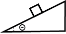

Walkthrough Problem Part C [Solution]
A block, with a mass of 10kg, is placed on top of an incline, with an angle of 30o, and begins to slip due to the absence of friction. Determine the acceleration at which the block will slide down the slope.

c) When these two forces act on the block at the same time, their combined exertion is called the “net force.” We can think of each force as a vector and use vector addition to determine the direction of the net force. The direction of the net force will be the direction in which the block moves. Based on the direction of the forces you determined in part b, along which direction do you think the block will move? In other words, which direction will the block accelerate in?
Answer: D
The normal force pushing away from the incline surface helps to counteract the gravitational force that pushes the block into the surface. Therefore the block does not move upwards off the incline or downwards into the incline. However since the block is place on an incline, some of the gravitational force acts in the direction along the surface of the incline. This portion of the gravitational force will move the block downwards on the incline.